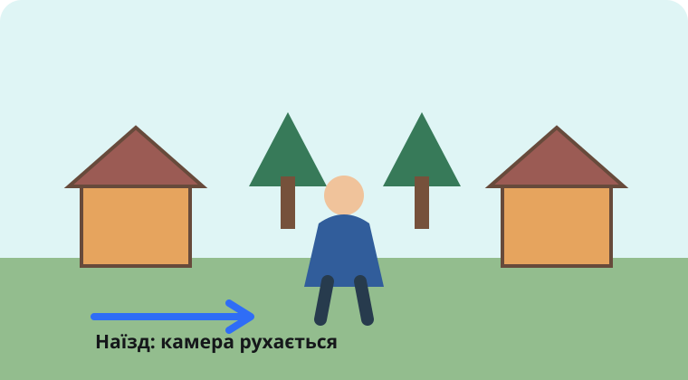

Порівняй способи генерації відео, опиши рух камери й перевір, що модель справді створила.
Модель створює рухому сцену за текстовим описом. Чітко назви об'єкт, дію, середовище й рух камери.
Зображення задає вигляд першого кадру, а запит пояснює, що має рухатися і як змінюється камера.
Наявний відеоряд перетворюється або стилізується. Перевір, які деталі й рухи інструмент зберіг.
Об'ємна сцена показує, як камера рухається відносно персонажа й декорацій. Обери рух; кнопки працюють з клавіатури.
Завантажується сцена або її доступний текстовий опис.

Обери рух камери, щоб побачити його назву та приклад фрази для промпту.
Сцена виконає випадковий рух. Обери назву з чотирьох варіантів.
Визнач, що було початковим матеріалом: текст, окреме зображення або відео.